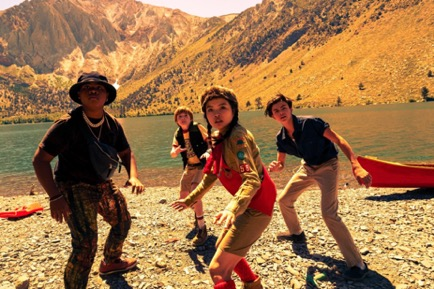

September 23, 2019
In this Netflix film, Rim Of the World, four misfit kids meet at a summer camp when an alien invasion turns the entire world into turmoil. They must overcome their problems and differences and successfully deliver an important key to NASA’s Jet Propulsion Laboratory, with the survival of humanity on their hands. The film is packed with action, comedy, sci-fi, and horror, and a coming-of-age story, and pays homage to the kid-centred adventure genre of movies from the 1980s.
There’s the shy one with dormant heroic qualities, Alex. There’s the comic relief, Dariush. There’s the touch, intelligent, quiet girl, Zhenzhen. And then there’s the bad boy, Gabriel. It’s like faith brought this group of misfits to do complete a mission of saving the world. Alongside this, their conflicting personalities helps humanise them. Throughout the film, there are homages to similar movies that came before it. There is an intense scene resonant of the raptors chasing the children in Jurassic Park. The banter between the characters can be compared to The Goonies. This makes it a relatable, fun flick for all ages.
What I think is so important to receive from the film is its coming of age theme and message. It teaches us a lesson to never underestimate your potential. It’s okay to be different and scared because you might just save the world one day. All these elements make you look past the stiff, rigid special effects and CGI in the aliens and explosions. A few of the interactions and dialogues were a bit obstinate and abnormal. For me, it fails to live up to the movies that inspired it. Nevertheless, it was an enjoyable, distraction from reality.
Rim Of The World has managed to take the 80s concept and adapted a new spin on it, incorporating a feel of nostalgia while still making it unique from the others. It is a film that offers that escapist entertainment, as well as the effect of bringing us back to our imaginative childhoods. I would definitely recommend this satisfying adventure flick to fans of sci-fi, action, and alien movies.
Rate - 7.5/10